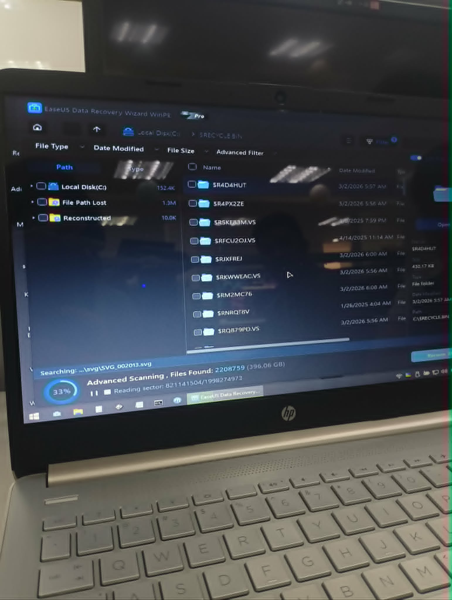
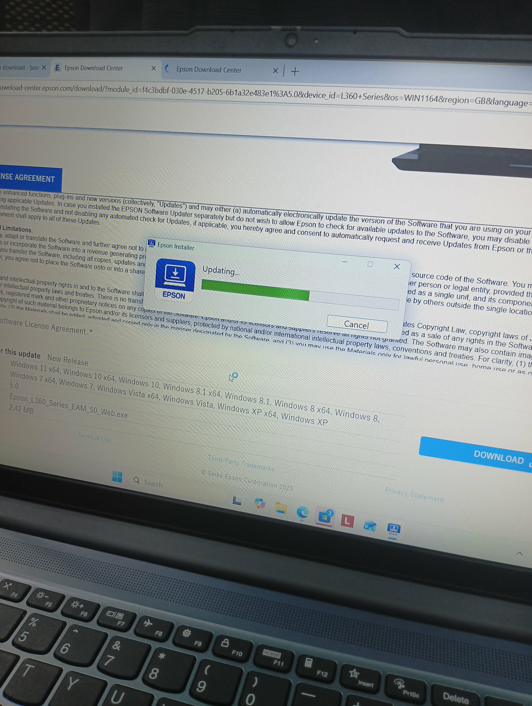
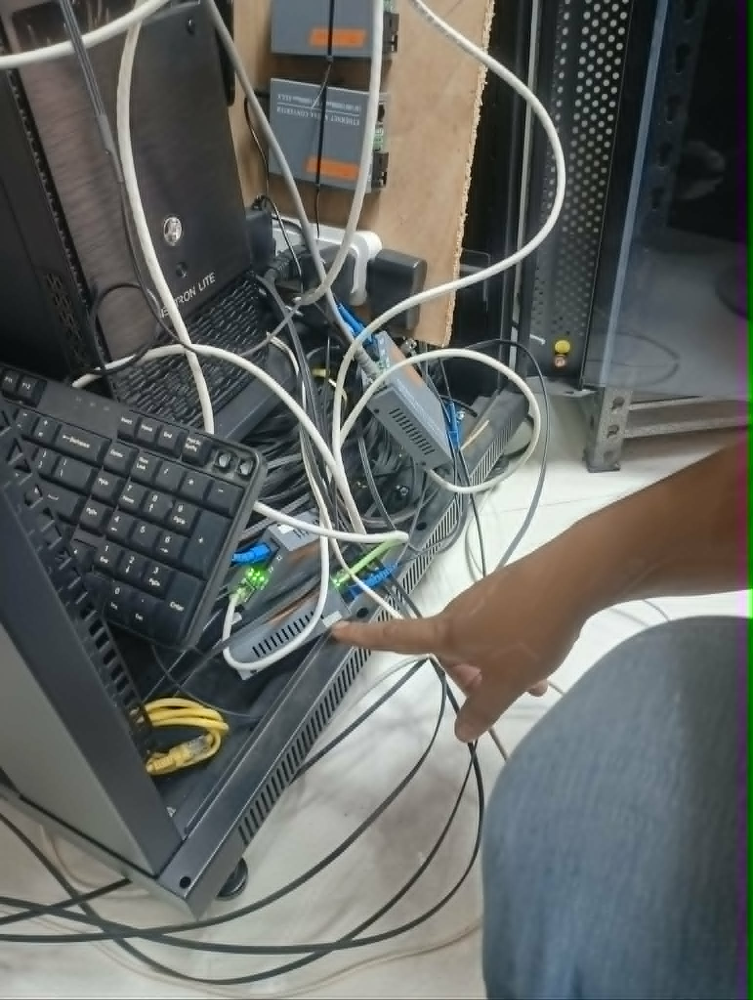
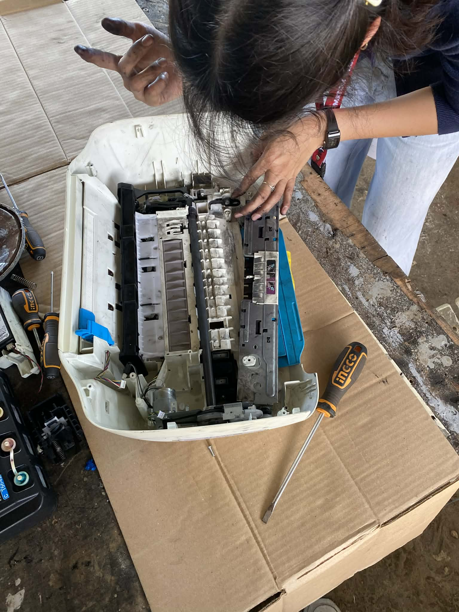
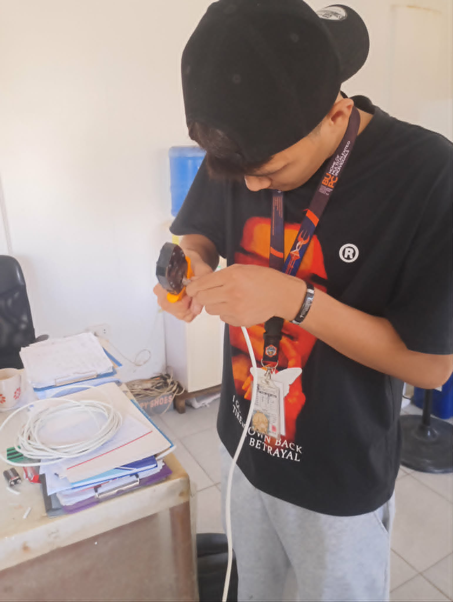
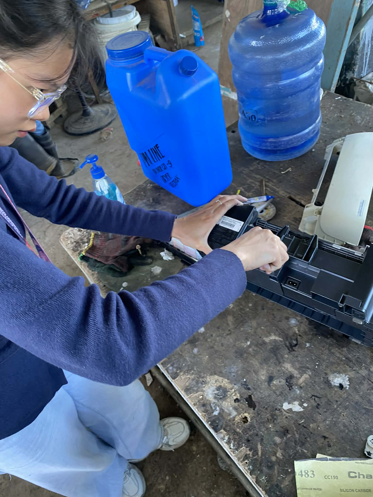
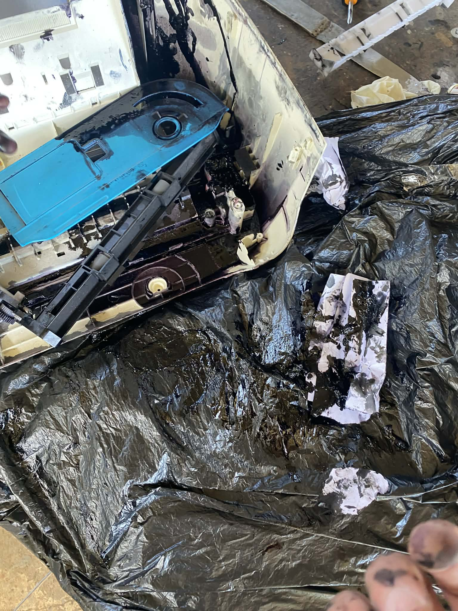

Narrative
The third week of my internship started on Day 10 with a printer troubleshooting request. An Epson L360 inkjet printer owned by Ma'am Mervie Curie M. Belen of the Warehouse Office was brought to our attention due to poor print quality — the printouts were coming out faded and streaky, with visible banding across the pages. Upon inspecting the unit, we first checked the ink levels and found them to be adequate, so the issue was not ink-related. We then noticed that the power cord appeared worn and was not providing a stable connection, causing the printer to intermittently lose power. We replaced the faulty power cord with a new one, which resolved the power instability. To address the print quality, we performed a power ink flushing — a deeper cleaning cycle that forces ink through the print head nozzles at high pressure to clear any dried ink or clogs. After running the flush and printing a nozzle check pattern, the output quality was noticeably restored, and Ma'am Belen confirmed that the prints were back to their expected clarity.
Day 11 was largely administrative. We spent most of the day preparing documents for the IT Maintenance Request Form — a standardized internal document used by the IT department to formally log and track all maintenance activities performed on company equipment. This includes details such as the type of equipment serviced, the nature of the issue reported, the troubleshooting steps taken, the parts replaced (if any), and the final resolution. Proper documentation is a critical part of IT operations because it creates an audit trail, helps track recurring hardware issues, and ensures accountability. Filling out these forms also helped me understand the importance of maintaining organized records in a professional IT environment, as it allows the team to reference past maintenance history when diagnosing future problems on the same equipment.
On Day 12, we created a UTP (Unshielded Twisted Pair) cable for a LAN-to-LAN connection needed by one of the employees in the Admin Office. This involved cutting the cable to the required length, stripping the outer jacket, arranging the individual wire pairs according to the T-568B wiring standard, and crimping RJ-45 connectors onto both ends using a crimping tool. After crimping, we tested the cable with a LAN cable tester to verify that all eight pins were making proper contact and that there were no crossed or broken wires. The cable was then deployed to establish a direct Ethernet connection for the employee's workstation. In addition to the cabling work, we also prepared several documents that required signatures from various department heads. We organized the paperwork, ensured all necessary fields were filled out, and personally visited the corresponding signatories across the office to obtain their approvals. This part of the day gave me insight into how IT tasks often involve coordination with other departments and that the administrative side of IT work is just as important as the technical side.





Day 13 was by far the most eventful and learning-intensive day of the week. It started with a complaint that there was no internet connection at the Staff House. The first thing we did was check the server connection that feeds the Staff House. We noticed that the indicator light on the media converter — a networking device that converts signals between different media types, in this case converting fiber optic signals into Ethernet (RJ-45/LAN) signals so that devices using standard copper Ethernet cables can connect to a fiber optic network — was showing only one light, indicating that the fiber-to-Ethernet conversion was not happening and there was indeed no active internet connection being passed through.
We initially tried unplugging the LAN cable from the server and transferring it to a different port on the switch, but nothing changed. So we proceeded to the Staff House to inspect the media converter on that end. We found the same single-light indicator there as well. We tried unplugging both the power supply and the LAN cable from the Staff House media converter, but the issue persisted. Given that the problem appeared on both ends, we concluded that the issue was not with the Staff House connection itself but rather with the media converter at the server side — it seemed like the device was failing to convert the incoming fiber optic signal to an Ethernet signal. We returned to the Admin Office and tried unplugging the media converter from the server and plugging it back in, but still nothing changed. As a final step, we decided to replace the power cord of the media converter, suspecting that it might not be receiving sufficient or stable power. Sure enough, right after swapping the power cord, the indicator light showing an active internet connection came on. The light on the switch port connected to the Staff House LAN also turned on, confirming that the connection was restored. We went back to the Staff House to verify, and after connecting a phone to the Wi-Fi, the internet was confirmed to be working again.
As soon as we returned to the main office,
another complaint came in — this time from Ma'am
Lindy, who reported that printing was taking an
unusually long time. She suspected that the
internet was slow since her printer was
connected over the network. The troubleshooting
for this issue was handled by our mentor, Sir
Jhong, as we were still not familiar with
diagnosing network printing performance issues.
Sir Jhong ran a ping
google.com
command, and the response times were
consistently in the 8ms–10ms range, which
indicated that the local internet connection was
perfectly healthy. He then pinged the IP address
of the remote desktop that Ma'am Lindy was
using, and the response times jumped to the
86ms–89ms range. This clearly showed that the
bottleneck was not the local network but the
connection to the remote desktop — the high
latency meant that data was taking significantly
longer to travel between the remote desktop and
the local printer. Since the remote desktop was
hosted at the head office, the only course of
action was to follow up with the head office IT
team to investigate the connection on their end.




Later that day, we were asked to restore some files for one of the employees in the Purchasing Department. We booted the system unit and successfully entered the BIOS setup, but we encountered difficulty getting the boot options to appear so we could boot from the USB flash drive. We tried analyzing the situation first and plugged the flash drive into different USB ports on the system unit. When that didn't work, we checked whether the flash drive itself was corrupted by plugging it into our laptop. Upon inspection, we discovered that the flash drive did not contain the recovery files we needed to perform the restoration — the expected folders and files were simply missing. We then copied the necessary recovery files onto the flash drive and attempted the task again, but it still didn't boot properly.
At that point, we decided to inform our mentor, Sir Jhong, about the problem. We showed him the contents of the flash drive, and he quickly identified the issue — the folders and files that we needed were actually present on the drive but were hidden. He showed us how to unhide the files by adjusting the folder options to display hidden files and folders. With the correct files now visible and accessible, we proceeded with the restoration. After approximately two hours of running the recovery process, we were able to successfully retrieve the files. However, Sir Joseph, the employee from the Purchasing team, informed us that he could not locate specific files he was looking for among the recovered data. He asked us to perform the restoration once more, but this time to specifically recover only files from the years 2023–2024, filtered by file type — specifically pictures and documents. We were also tasked with scanning physical documents to a PC. What amazed me was that the scanning could be done wirelessly — all we had to do was select the name of the destination desktop from the scanner's interface, and the scanned documents were sent directly to that computer over the network without needing any physical USB or cable connection. It was a small but impressive demonstration of how modern office equipment leverages network connectivity to streamline everyday tasks.
On Day 14, we configured a TP-Link router for the Engineering Office. The task involved accessing the router's admin panel through a web browser, where we changed both the Wi-Fi network name (SSID) and the password. We renamed the network from its default name to "PM3-Temp" because the router was serving as a temporary replacement in the Engineering Office. Changing the SSID to a recognizable name helps employees easily identify and connect to the correct network, especially in an office environment where multiple Wi-Fi networks may be visible. We also created another LAN (Local Area Network) cable, this time for the Warehouse Office. One of the system units there had previously undergone a motherboard replacement (this repair was performed before we started our OJT) due to damaged ports on the original board. Since the new motherboard was already installed, our task was to run and connect the new LAN cable to re-establish the network connection. We crimped the cable using the T-568B standard, tested it for continuity, and successfully connected the system unit back to the office network. The cabling was completed without any issues.
The last day of the week, Day 15, involved an Acer TravelMate 5760 (XSS38) laptop brought in by one of the employees who had forgotten their Windows login password. The laptop was going to be repurposed as a backup device — the plan was to back up the data on its existing HDD and eventually replace it with an SSD for better performance. However, before any of that could happen, we first needed to bypass the forgotten password to gain access to the system. Instead of going through the lengthy manual process of bypassing the Windows password (such as using command prompt through recovery mode or editing the SAM registry hive), we used Hiren's Boot CD PE — a pre-installation environment bootable tool that contains a suite of utilities for system recovery, diagnostics, and password management. Using the password reset utility included in Hiren's Boot CD PE, we were able to reset the Windows login password quickly and gain access to the laptop without any data loss. Once we had successfully bypassed the password and confirmed access to the desktop, we proceeded to update the installed version of Microsoft Office from the outdated MS Office 2010 to MS Office 365, ensuring the employee would have access to the latest productivity features, cloud integration, and security updates.